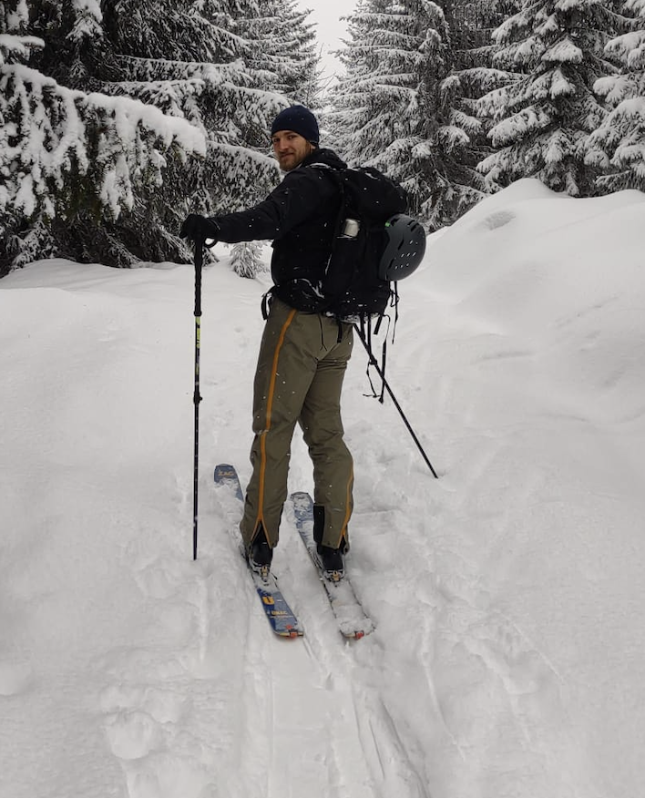

Vědecký pracovník na Katedře fyziky na Stavební fakultě ČVUT
Organizátor Tábora mladých matematiků
E-mail: zbiratom@cvut.cz
Místnost: A-624a
Konzultační hodiny: Pátek 10:00 - 11:30
Výuka
102FYI - Fyzika
Publikace
2025
- S. Vítek, T. Zbíral, V. Nežerka: Using hyperspectral imaging to identify optimal narrowband filter parameters for construction and demolition waste classification
2024
- T. Zbíral: Classification of construction and demolition waste using computer vision (bakalářská práce)
2023
- T. Zbíral, V. Nežerka: Computer Vision-Based Algorithms for Recognition of Construction and Demolition Waste Materials
- V. Nežerka, T. Zbíral, J. Trejbal: Machine-leaning-assisted classification of construction and demolition waste fragments using computer vision: Convolution versus extraction of selected features
